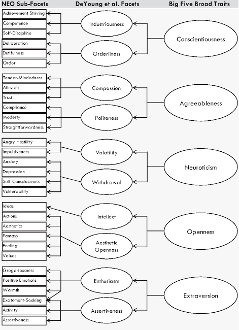

1. The Inversion of Authority (The Moral Auditor Mandate)
The Bureau of Harmony is decentralized. The traditional, un-coachable central HR function is stripped of moral authority. All ethical compliance is handled by the HR Moral Auditor at the branch level, who acts as the Specialist’s direct guardian.
2. Moral Purity and Guardrail of Integrity
The Bureau of Harmony enforces the moral purity of the Guild, protecting it from both internal and external corruption, as mandated by the Founder's Rule.
Moral Purity and Right to Eject
Guests are treated as students in the Training Centre. The Guild has the absolute, non-negotiable right to eject any guest engaging in gross moral failures (e.g., exploitation, adultery) that violate the spiritual purity and integrity of the Common Heart.
The Guardrail of Integrity (The Ultimate Test)
We reject all forms of corruption:
- Bidirectional Exploitation: Neither staff exploiting upper management, nor upper management exploiting staff.
- External Contamination: The Leader's private life must never introduce external moral/financial poison that destroys the Guild.
3. The Recruitment & Onboarding Protocol (The Employee Story)
We do not just "hire" people. We begin the Employee Story. Our system is a data-driven model designed for personalization, connecting every stage of the employee lifecycle. This ensures we recruit the right people, grow them as Specialists, and learn from their journey to constantly improve the Guild.
Step 1: Discovery & Application
It starts with our Company Branding and honest Recruitment Discovery. Prospective Specialists apply via our portal, submitting not just a CV, but the raw data for their Employee Story, such as:
- Full CV (Previous Experience)
- Technical & Soft Skill Competencies
- MBA/BBA Course Outlines
- All relevant certificates
Step 2: The ACEM Assessment
All applications are assessed based on the ACEM Purity Mandate. We test only for skills 100% relevant to the codified job role. We ban all irrelevant academic and cultural barriers, ensuring a fair, merit-based selection.
Step 3: The Trainee Specialist
Successful candidates are not "Interns." They are hired as paid Trainee Specialists at a Dignity Wage. They are given a codified role to begin their journey, allowing them to learn and contribute from day one.
Interactive Frameworks
The models that power our HR system. Click any block for granular details and process flow.
ACEM (Al-Ameen Capability Evolution Matrix) - The Objective Standard
5Ps Strategic Frameworks (Tying HR to Business Strategy)
Glocalisation Model & GLSM (Grandmaster Leadership Strategy Matrix)
8. Extension 2: Glocalisation Model & GLSM
The Glocalisation Model is the hybrid framework (Bushido + Flow) that feeds the GLSM diagnostic tool.
- START: Analyze Cultural Context: (Observe) Prevents the academic trap of starting with an opinion.
- STEP 2: Assess Personality (ACEM Individual Block):
(Orient) Identifies the true self (Dark Triad, Conscientiousness). - STEP 3: The Convergence & The Vice:
(Decide) All paths converge to pinpoint the ethical failure (e.g., Vice of Cowardice/Lethargy). This is the **Stem Cause** diagnosis. - FINAL: Adapt Strategy and Framework:
(Act) Decisions result in a **Process Prescription** (e.g., OODA Loop Application) to fix the specific deficiency identified.
9. Extension 3: The ACEM Score (The 5 'Vices')
The ACEM Score is the objective standard for performance, replacing subjective reviews. It diagnoses the **Stem Cause** of failure, mapping it to one of the 5 Vices.
 ",
"A = Ambition (Vice: Lethargy): The drive to achieve *beyond* the job description.",
"C = Conscientiousness (Vice: Deceit): The internal drive for duty, discipline, and order.",
"E = Execution (Vice: Cowardice): The ability to act and decide under pressure, facing risk.",
"M = Maintenance (Vice: Arrogance): The humility to sustain and perfect existing systems.",
"(S) = Savvy (Vice: Ignorance): The social/political skill to navigate organizations."
]'>
",
"A = Ambition (Vice: Lethargy): The drive to achieve *beyond* the job description.",
"C = Conscientiousness (Vice: Deceit): The internal drive for duty, discipline, and order.",
"E = Execution (Vice: Cowardice): The ability to act and decide under pressure, facing risk.",
"M = Maintenance (Vice: Arrogance): The humility to sustain and perfect existing systems.",
"(S) = Savvy (Vice: Ignorance): The social/political skill to navigate organizations."
]'>
10. Extension 4: The Al-Ameen Cultural Profile (Virtues & Vices)
This defines the non-negotiable ethical and personality foundation (the "Individual Block" from the ACEM Matrix). It provides the objective framework for diagnosing the Vices.
1. The Virtue-Vice Spectrum
We reject the modern idea that 'anything is acceptable'. Our standard is based on the Aristotelian mean, where virtue is the balance between two extremes (vices). This is the basis for diagnosing ethical failure.
2. Personality & Hierarchy Frameworks
These models provide the "Individual Block" context. We use them to identify core traits (Conscientiousness, Dark Triad) and map an individual's potential progression.
Core Personality
Hierarchy of Skills
Hierarchy of Pursuits
11. Extension 5: Grandmaster Culture Framework (The Funnel)
The *Al-Ameen Orientation & Filter* is the "O" in the OODA Loop, synthesizing GLOBE and Trompenaars into measurable ACEM outcomes.

GLOBE Cultural Dimensions (9)
Focuses on **Societal Practices** (The "Dignified Guide" behavior). Our scores are filtered to ensure: *Performance Orientation*, *Future Orientation*, and *In-Group Collectivism* are prioritized over pure *Assertiveness*.
Trompenaars’ 7 Dimensions
Focuses on **Dilemma Resolution** (The "Common Heart" philosophy). We demand **Universalism** (rules over relationships) and **Achievement** (performance over ascription/seniority).
360-Degree Feedback: Auditing the Hierarchy
360-degree feedback is applied at **all levels** to prevent **Credential-Based Arrogance** from insulating any employee. It ensures that an Executive is audited not just by supervisors, but by the people they impact most—their subordinates and peers.
Application (All Levels):
- **Professor Level:** A Professor's score is equally weighted by their students (reporting **L1 Generalism** in the Skill Block) and support staff (reporting **Dark Triad** entitlement/abuse).
- **Executive Level:** The CEO's **Authenticity** and **Justice** (Virtues) are scored by direct reports on whether directives are clear and ethically sound, not just strategically successful.
The ACEM Score: The Final Judgment
The BARS/360 data forms the only input for the employee's **ACEM Score**. This score is the objective standard for professional evolution, promotion, and termination, making subjective managerial preference irrelevant.
Final Integration:
- **Pay:** Raises and bonuses are exclusively tied to a rising ACEM Score, reinforcing the Objective Standard.
- **Intervention:** A consistently low ACEM Score triggers mandatory, immediate intervention via the **GLSM diagnostic flow** (Observe -> Orient -> Decide on a Vice Prescription), bypassing the typical bureaucratic HR warning process.
4. Granular Staffing & Payroll
Click any role card to see the full breakdown. Use the language switcher at the top-right to toggle বাংলা / English.
Granular Staffing Model Summary
This table summarizes the total headcount and payroll for each operational scenario, defining the "Platoon" and "Company" levels of our functional "army."
| Scenario | Total Headcount | Functional Level | Total Monthly Payroll (BDT) |
|---|---|---|---|
| Worst / Improbable Mid | 38 Staff | Platoon | 1,042,000 |
| True Mid | 53 Staff | Reinforced Platoon | 1,568,000 |
| Low Ideal | 67 Staff | Company | 1,908,000 |
| High Ideal | 82 Staff | Strong Company | 2,280,000 |
5. Operations & Departments
Finance & Accounting
Handles budgeting, ratio analysis, and capital layering for sustainable growth.
Marketing & Branding
Develops brand identity, campaigns, and bilingual digital presence across all media.
HR & Talent Development
Builds long-term talent pipelines through mentorship, stewardship, and culture building.
Hospitality & Guest Services
Creates guest experiences based on Rocco Forte style operational elegance.
Architecture & Design
Integrates Alo Chaya’s design language with Lighthouse aesthetic and material innovation.
Operations & Management
Oversees logistics, facility performance, and digital workflow integration.
6. Role Assignment & Employee Journey
Assign a Specialist to one or more roles (Versatilist paths), track onboarding stage and ACEM entry.